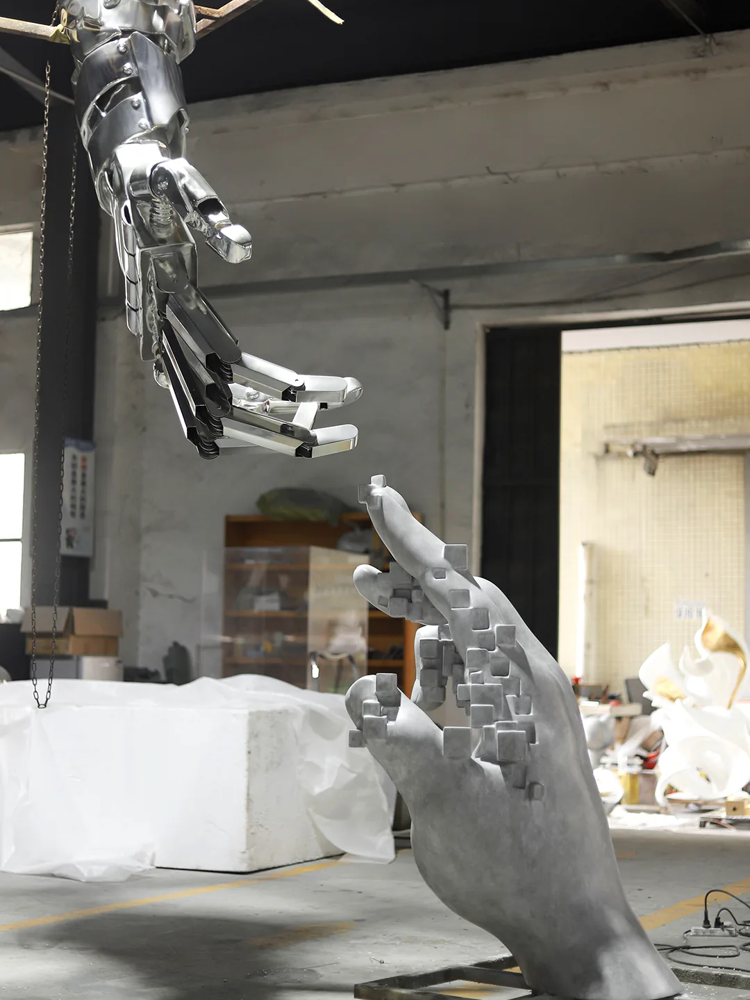
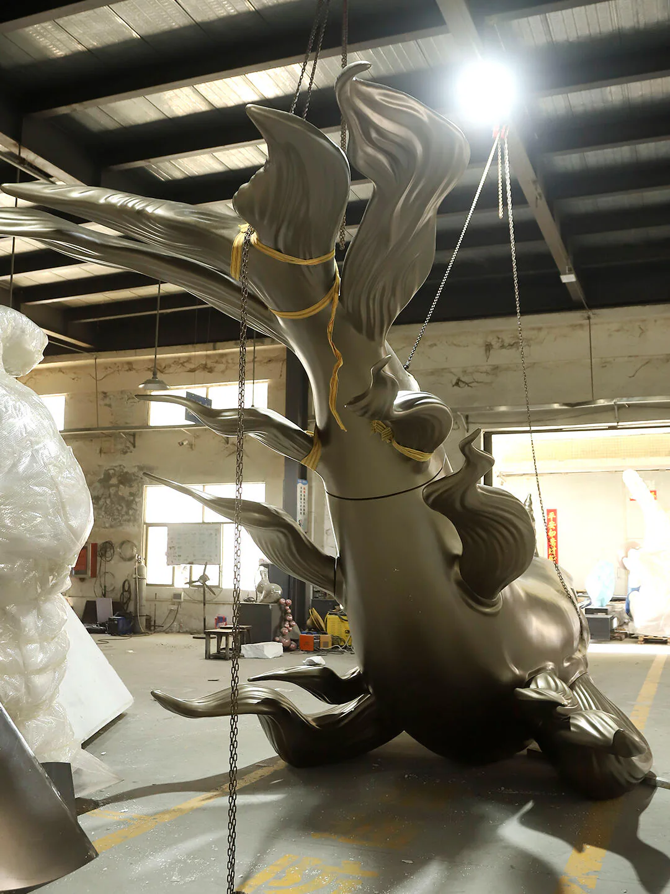

Custom sculpture for restaurants, cafes, bars, retail stores and brand flagships. Develop a recognisable focal point around the venue’s identity, customer circulation and daily operations.
Retail & Dining Spaces
Custom sculpture for restaurants, cafes, bars, retail stores and brand flagships. Develop a recognisable focal point around the venue’s identity, customer circulation and daily operations.
Start with your project
Restaurant operators, retail brands and store designers.
Storefront features, interior sculpture and display-zone focal points.
A single venue or tenant space, including shops inside larger developments.
Agree the scope
Provide brand artwork, floor plans, frontage views and customer or staff routes.
Review occupied footprint, edges, touch zones, cleaning and any proposed lighting interfaces.
Agree finish samples, fixing points, delivery access, local installation and any future relocation requirements.
Images and evidence
These photographs document separate WEIERYANG works, including workshop views and presentation photographs. Review form, plinths and finishes for a new venue; no completed retail or restaurant installation is asserted.

WEIERYANG fabrication record — WEIERYANG fabrication record: an overall view of the hand-form arrangement.

WEIERYANG fabrication record — WEIERYANG fabrication record: overall whale form and curved reflective surfaces.WEIERYANG production record — Petal form and display plinth shown together. Confirm the occupied footprint, plinth interface and customer circulation before approving a new venue design.
WEIERYANG production record — An abstract form and its plinth, shown against a plain backdrop. Agree the finish sample, presentation angle and base interface for the commissioned piece.
From an approved prototype to store-specific delivery
Briefs for restaurant and cafe sculpture should reflect how staff and guests use the space. Retail display sculpture may also need repeated display changes, relocation or storage. Agree the OEM appearance reference, plinth and site-specific fixing scope around those operating needs.
Prepare the brand package
Supply approved artwork, views, colour references, intended dimensions and the shop layout. Confirm permission to commission the design.
Approve the appearance reference
Agree whether a sample or first article is needed. Record the accepted form, surface, touch areas, fixing approach and any changes before repeat fabrication.
Build a store-by-store schedule
List quantities, destinations, access dimensions, fixing conditions, packaging labels and any replacement-part or relocation requirements.
Before an OEM quotation
State whether the request is for one piece or a proposed repeat series; quantities and feasibility need review.
Separate artwork development, samples, fabrication, lighting interfaces and installation tasks.
Request the agreed appearance record and packing list; clarify what is included for each destination.
Before you commission
Can a mascot or character be made for our store?
A character-based project can be reviewed using original artwork or artwork you are authorised to commission. Confirm the permitted use, approved views, colours and fabrication scope before production.
Can you work from an existing shop design?
Share the drawings, proposed placement, access dimensions and brand requirements. The new sculpture’s form, material, fixings and finish need project-specific review; a reference photograph is not a fixed specification.
Can one approved design be used across several stores?
It can be reviewed as a multi-location request. Share the quantity and site matrix, identify the approved appearance reference and record site differences. No standard minimum order or identical installation condition is assumed.
What should we check before approving a store sculpture sample?
Compare it with the approved views and colours, then review occupied space, customer contact, cleaning, visible joints and fixing access. Record the approved reference and any changes so later pieces have a clear comparison basis.
What changes when a sculpture is for a restaurant or cafe rather than a retail display?
Define the actual operating pattern. In a restaurant or cafe, review serving routes, table clearances, likely guest contact and cleaning access. For a changing retail display, add relocation frequency, removable or permanent fixings, storage and repeat assembly. Confirm the plinth and who approves the proposed footprint; either setting may need both sets of checks.
Tell us about your space.
Share the project location, intended placement, drawings or dimensions, artwork and installation requirements. The proposal will define the design, fabrication and delivery scope.
Authorized visual reference — Authorized commercial-space reference: sculpture, water edge and visitor circulation.
Custom sculpture for hotel lobbies, resort arrivals, atriums, offices and shared commercial areas. Begin with the architecture, visitor routes and the team responsible for approvals.
WEIERYANG fabrication record — WEIERYANG fabrication record: an overall view of the hand-form arrangement.
Custom sculpture for restaurants, cafes, bars, retail stores and brand flagships. Develop a recognisable focal point around the venue’s identity, customer circulation and daily operations.
WEIERYANG fabrication record — WEIERYANG fabrication record: portrait form and painted colour areas.
Custom sculpture for visitor destinations, cultural streets, themed attractions and character-led spaces. Develop a coherent visual theme alongside visitor routes, viewing distances and the site team’s requirements.
Verified construction record — Verified Middle East construction record: installation in progress.
Custom sculpture for civic plazas, parks, community spaces and public landmarks. Review the relationship to the site, long views, weather exposure and structural coordination before defining the work.